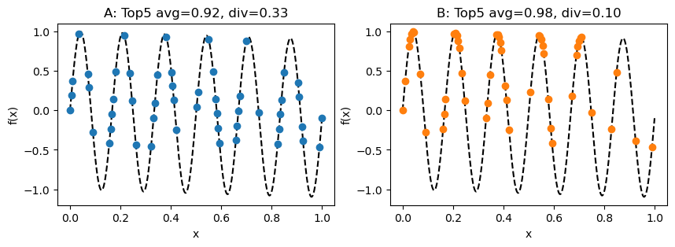

main_plot()
Austin Tripp
October 7, 2024
NOTE this blog post can be run as a jupyter notebook. I re-ordered the cells to make it easier to read; to re-produce all the plots see instructions at the end of the post.
“Diverse optimization” has been a popular topic in machine learning conferences for a few years now, particularly in the “AI for drug discovery” sub-field. In this context, the goal of “optimization” algorithms is to suggest promising drug candidates, where “promising” means maximizing one (or more) objective functions. An example of an objective function could be a docking score (an approximate simulation of the interactions between a protein and a molecule). “Diverse” optimization further requires that an algorithm produce multiple distinct candidate solutions. This is typically desired when the objective functions don’t fully capture everything we want (for example, a drug candidate also having low toxicity). The hope is that a diverse set of candidates will have a higher chance of one useful candidate compared to a non-diverse sets.
Consider the popular single-objective noiseless setting with objective function f. Assume that you run an algorithm and produce a set of candidates \{x_1,\ldots,x_N\} (sorted in decreasing order of f). A common way to score the algorithm is to report the metrics:
Usually k is set to a reasonably low number (5 or 10). At first glance these metrics seem reasonable: a good “diverse optimization” algorithm should ideally produce k points with high property scores and which are very diverse.
The main point I want to convey in this post is that it is possible for an algorithm to have a low top-k diversity despite producing a diverse range of solutions. To illustrate this, imagine 2 algorithms (A and B) optimizing a toy function f in 1D. Each algorithm produces the following 50 candidates, achieving the following top 5 average and diversity scores (using Euclidean distance for the diversity metric).
Although algorithm B has a slightly higher top-5 average score, algorithm A has a much higher top-5 diversity score. This suggests a trade-off between the two metrics However, overlaying the candidates and zooming in suggests that this trade-off is an illusion.
This plot suggests that algorithm B has performed strictly better than algorithm A, despite its top-5 diversity being much lower. Not only has B also found the exact same top-5 solutions as A (notice the orange circles behind the blue triangles), it has also found two improved solutions in each mode which are closer to the local optimum.
The large difference in top-5 diversity scores is caused by algorithm B finding “too many” points in the first two modes of the function, causing the cutoff for entering its top-5 to be much higher than than of algorithm A. Although this does make B’s top-5 diversity indisputably lower, I argue that it does not make sense to describe B’s overall set of solutions found as “less diverse” than A’s. Therefore, I see the top-k diversity metric itself as the problem.
Short answer: yes.
Long answer: if you are considering the top-k solutions of two algorithms and want to know whether they are diverse, then this is a sensible metric. However, the example above shows that it does not make sense to use top-k diversity values to make conclusions about the overall diversity of points found by an algorithm. This is how many machine learning papers interpret this metric, and I think they should stop doing that.
If you did not find the example above convincing, consider the following thoughts:
I don’t have a perfect answer for this. To avoid a scenario like the one above, I think diversity metrics would need to satisfy a monotonicity property: that adding additional points to the solution set does not make the diversity score any worse. For example, given a set of points
S=\big\{(x, y)\big\}_{i=1}^N
one approach to making a monotonic metric is to extract a set of points which are high-performing (y value above some cutoff) and diverse (every point is at least a specified distance away from every other point). Mathematically, such a set would satisfy.
S^+ = \{(x,y) | (x,y)\in S, y \geq c_1, d(x,x') \geq c_2 \forall (x',y')\neq(x,y)\}
The following plot illustrates this for algorithms A and B from above, using c_1=0.9 and c_2=0.05.
One could, for example, use the sizes of these sets as a metric. This approach has the disadvantage of introducing some extra hyperparameters (c_1 and c_2), but I could imagine these parameters being known for many practical problems in fields like drug discovery.
At the very least, this should inspire researchers to look into better metrics!
First, run all cells below. Then, run all cells above.
# (these locations were all hard-coded)
_some_good_points = [
0.035,
0.215,
0.382,
0.55,
0.70,
]
_extra_good_points = [v+offset for offset in np.linspace(-1e-2, 1e-2, 5) for v in _some_good_points]
_some_ok_points = [0. , 0.00502513, 0.01005025, 0.07035176, 0.07537688,
0.08040201, 0.08542714, 0.09045226, 0.09547739, 0.15577889,
0.16080402, 0.16582915, 0.17085427, 0.1758794 , 0.18090452,
0.2361809 , 0.24120603, 0.24623116, 0.25125628, 0.25628141,
0.26130653, 0.32160804, 0.32663317, 0.33165829, 0.33668342,
0.34170854, 0.34673367, 0.40201005, 0.40703518, 0.4120603 ,
0.41708543, 0.42211055, 0.42713568, 0.49246231, 0.49748744,
0.50251256, 0.50753769, 0.51256281, 0.5678392 , 0.57286432,
0.57788945, 0.58291457, 0.5879397 , 0.59296482, 0.65829146,
0.66331658, 0.66834171, 0.67336683, 0.67839196, 0.73869347,
0.74371859, 0.74874372, 0.75376884, 0.75879397, 0.8241206 ,
0.82914573, 0.83417085, 0.83919598, 0.84422111, 0.84924623,
0.90452261, 0.90954774, 0.91457286, 0.91959799, 0.92462312,
0.98994975, 0.99497487, 1. ]
random.shuffle(_some_ok_points)
_some_bad_points = [0.11055276, 0.12060302, 0.13065327, 0.14070352, 0.28140704,
0.29145729, 0.30150754, 0.44221106, 0.45226131, 0.46231156,
0.47236181, 0.6080402 , 0.61809045, 0.6281407 , 0.63819095,
0.77386935, 0.7839196 , 0.79396985, 0.8040201 , 0.93969849,
0.94974874, 0.95979899, 0.96984925]
random.shuffle(_some_bad_points)
# Make actual point sets
N = 50
x_bad = np.asarray(_some_bad_points + _some_ok_points)[:N]
x_ok = np.asarray(_some_good_points + _some_ok_points + _some_bad_points)[:N]
x_good = np.asarray(_extra_good_points + _some_ok_points + _some_bad_points)[:N]
set_name_tuples = [
# (x_bad, "A", "bad"),
(x_ok, "A", "ok"),
(x_good, "B", "best"),
]def _get_topk(x, y, k=5):
argsort = np.argsort(-y)[:k]
return x[argsort], y[argsort]
def topk_avg(x, y, k=5):
return np.mean(np.sort(y)[-k:])
def topk_div(x, y, k=5):
topk_x = x[np.argsort(-y)[:k]]
del x, y
div_sum = 0.0
div_count = 0
for i in range(k):
for j in range(i+1, k):
div_sum += float(abs(topk_x[i] - topk_x[j]))
div_count += 1
return div_sum / div_countdef main_plot():
fig, axes = plt.subplots(1, 2)
fig.set_size_inches(10, 3)
colors = ["tab:blue", "tab:orange"]
for i, t in enumerate(set_name_tuples):
plt.sca(axes[i])
x_i = t[0]
y_i = f(x_i)
plt.plot(x, f(x), "k--")
plt.plot(x_i, y_i, "o", color=colors[i])
_avg = topk_avg(x_i, y_i)
_div = topk_div(x_i, y_i)
plt.title(f"{t[1]}: Top5 avg={_avg:.2f}, div={_div:.2f}")
plt.xlabel("x")
plt.ylabel("f(x)")
plt.show()def top_solutions_plot():
plt.plot(x, f(x), "k--")
plt.plot(x_good, f(x_good), "o", label="B", color="tab:orange")
plt.axhline(np.sort(f(x_good))[-5], color="tab:orange", linestyle=":", label="B cutoff")
plt.plot(x_ok, f(x_ok), "<", label="A", color="tab:blue")
plt.axhline(np.sort(f(x_ok))[-5], color="tab:blue", linestyle=":", label="A cutoff")
plt.legend()
plt.ylim(0.85, None)
plt.show()def uniform_cutoff_plot():
cutoff = 0.9
plt.plot(x, f(x), "k--")
plt.axhline(cutoff, color="gray", linestyle=":", label="cutoff")
x_ok_indices = [i for i, v in enumerate(x_ok) if f(v) >= cutoff]
plt.errorbar(x=x_ok[x_ok_indices], y=f(x_ok[x_ok_indices]), xerr=0.05, linestyle="None", marker="o", color="tab:blue", label="A")
x_good_indices = [15, 6, 7, 3, 24]
plt.errorbar(x=x_good[x_good_indices], y=f(x_good[x_good_indices]), xerr=0.05, linestyle="None", marker="o", color="tab:orange", label="B")
plt.ylim(0.89, None)
plt.legend()
plt.title("Diverse subsets above cutoff")
plt.show()@online{tripp2024,
author = {Tripp, Austin},
title = {Problems with the Top-k Diversity Metric for Diverse
Optimization},
date = {2024-10-07},
url = {https://austintripp.ca/blog/2024-10-07-problems-with-topk-diversity/},
langid = {en}
}